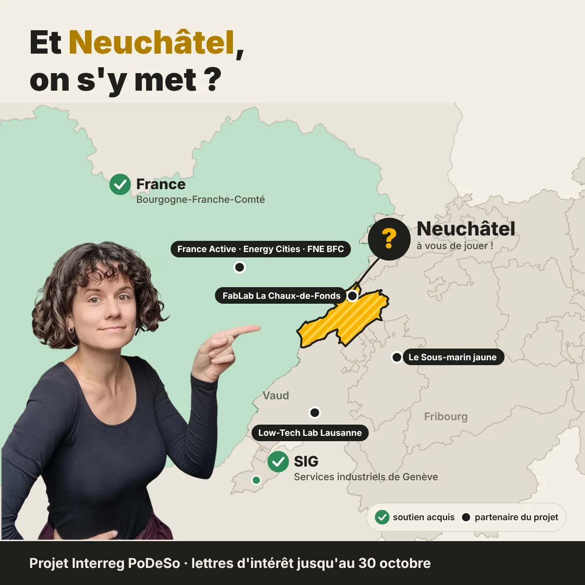

Et Neuchâtel, on s'y met ?
Les Services industriels de Genève ont signé. Nos partenaires français sont prêts. Des ateliers de Lausanne à Besançon s'y mettent. Les entreprises neuchâteloises ont toute leur place dans le mouvement : une lettre d'intérêt suffit, et elle ne vous engage à rien.
Lettres attendues d'ici le 30 octobre 2026.

Clac. Clac. Clac.
Le bruit d'une presse dans un atelier de la Tchaux, à 7 heures du matin. Le métal entre, la pièce sort.
Et si demain le métal coûtait le double ? Si la facture d'électricité prenait un tiers de plus ? On continue à faire clac ?
PoDeSo parle de robustesse. Pas celle des bras, celle des entreprises : continuer à bien produire quand tout bouge autour, en utilisant moins d'énergie, de matières et d'eau. Beaucoup d'ateliers de la région ont déjà trouvé leurs astuces. Ce projet veut les faire connaître et les faire circuler.
Le projet en trois temps
Repérer
Des entretiens avec les filières et les entreprises qui avancent déjà. Ce qui marche est raconté dans des fiches simples, en accès libre.
Réunir
Un réseau franco-suisse d'entreprises et de collectivités. Des rencontres, des retours d'expérience entre pairs, des groupes d'échange.
Accompagner
Un appui concret pour les entreprises qui veulent aller plus loin et construire leur propre stratégie.
Filières visées en priorité : horlogerie, microtechnique, mécanique de précision, construction, agroalimentaire, transport et logistique.
Ce qu'on vous demande
Une lettre d'intérêt d'une page, déjà rédigée. Elle dit simplement que la démarche intéresse votre entreprise.
- Téléchargez le modèle et adaptez-le si vous le souhaitez.
- Imprimez-le sur votre papier à en-tête et signez-le.
- Renvoyez-le en PDF à info+interreg@fablab-chaux-de-fonds.ch, idéalement avant le 23 octobre, au plus tard le 30 octobre.
Pas d'argent, pas d'heures à promettre, pas de données confidentielles à partager.
Ce que vous y gagnez
Les retours d'expérience d'autres industries de la région, en Suisse comme en France. Un cercle d'échange avec des gens qui se posent les mêmes questions que vous. Des outils et des fiches en accès libre. Et une place parmi les entreprises neuchâteloises qui ont pris le sujet en main les premières.
Qui est à bord
Partenaires du projet
- FabLab La Chaux-de-Fonds
- Low-Tech Lab Lausanne
- Le Sous-marin jaune, Fribourg
- France Active Bourgogne-Franche-Comté
- Energy Cities
- France Nature Environnement Bourgogne-Franche-Comté
Soutiens déjà annoncés
- ✓Services industriels de Genève
- ✓Côté français, partenariat complet
- Cantons : démarches en cours
- Entreprises neuchâteloises : à vous de jouer
Calendrier
- Jusqu'au 30 octobre 2026Nous réunissons les lettres d'intérêt.
- 6 novembre 2026Dépôt du dossier complet au programme Interreg France-Suisse.
- Mi-2027 à fin 2028Le projet se déroule sur 18 mois, si le financement est accordé.
Vos questions
Est-ce que la lettre nous engage ?
Non. Elle exprime un intérêt, rien de plus. Si le projet est financé, vous serez invité·e aux rencontres et vous participerez à votre rythme, ou pas du tout.
Et si le projet n'est pas financé ?
La lettre devient sans objet, sans aucune suite pour vous.
Nous n'avons encore rien fait sur ces questions. Est-ce pour nous ?
Oui. Le réseau accueille aussi les entreprises qui démarrent : c'est justement l'idée d'apprendre de celles qui ont déjà essayé.
Je ne suis pas la bonne personne dans mon entreprise.
Transmettez cette page à la direction ou au responsable qualité, production ou durabilité. Ou écrivez-moi et dites-moi à qui m'adresser : je m'occupe du reste.
On en parle ?
Mélanie Thomas, co-présidente du FabLab La Chaux-de-Fonds.
Je réponds à toutes vos questions, par mail ou par téléphone.
info+interreg@fablab-chaux-de-fonds.ch
076 281 38 30
FabLab La Chaux-de-Fonds · Rue de la Serre 68 · 2300 La Chaux-de-Fonds